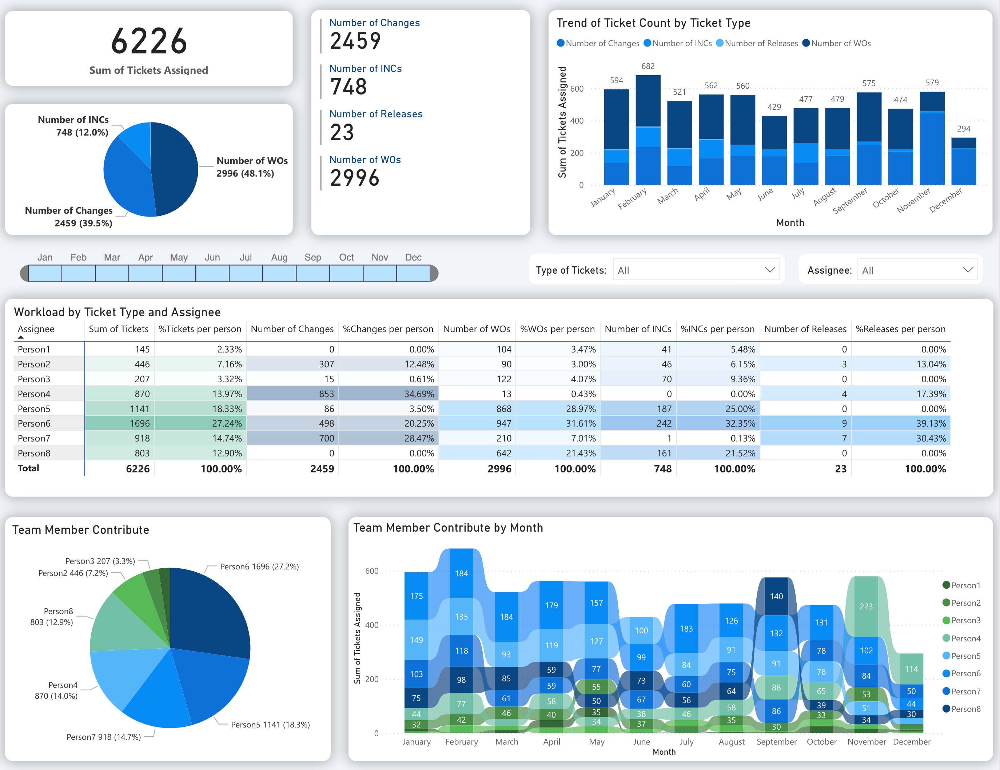
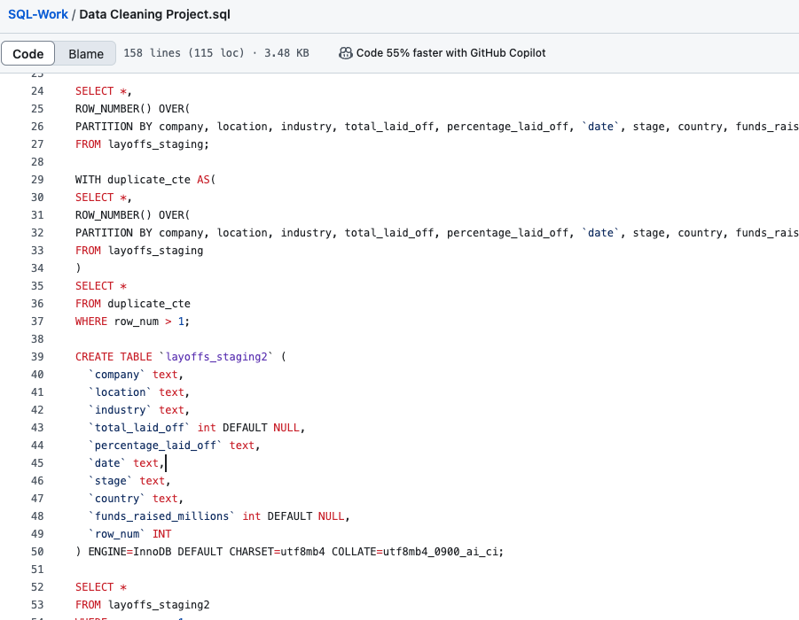

Projects

Power BI Workload Analysis Dashboard
A workload tracking dashboard to quantify team member contributions developed during my co-op at OPS.

SQL Data Cleaning & Analysis - Covid Layoffs
A comprehensive data cleaning process on a Tech Layoffs dataset from COVID-19 onset to 2024.
CIMC Math Contest Data Analysis using Python
Analyzed CIMC contest results to identify trends in key topics and cut-off grades.